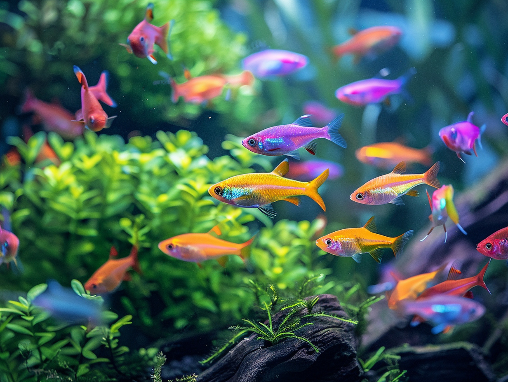

Aquariophilie en Guadeloupe : bien démarrer votre aquarium
Aquariums tropicaux, poissons, plantes et équipements : l'aquariophilie Guadeloupe selon Jardiland, c'est un univers complet et le conseil de passionnés. Rendez-vous dans nos magasins de Baie-Mahault et des Abymes pour bâtir ou faire évoluer votre bac.
Démarrer un aquarium est une passion patiente. Le premier réflexe est souvent de viser trop petit : c'est une erreur. La méthode, le bon matériel et un peu de patience font toute la différence entre un bel aquarium et un échec frustrant.

Démarrer un aquarium : par où commencer ?
Deux décisions structurent tout projet : le volume du bac et le type d'aquarium. Prenez le temps d'y réfléchir avant l'achat.
Choisir le bon volume
Un aquarium de 60 à 100 litres est nettement plus stable qu'un nano-bac de 30 litres : la qualité de l'eau y varie moins, les paramètres se régulent mieux et les poissons y sont plus sereins. Si vous débutez, partez sur un volume confortable, vous vous simplifierez la vie.
Eau douce, récifal ou bassin ?
L'eau douce tropicale est l'entrée idéale : large choix de poissons colorés, plantes vivantes faciles, équipement abordable. L'eau de mer récifale est superbe mais demande plus de matériel, de rigueur et de budget. Un bassin extérieur avec carpes koï peut aussi devenir le clou d'un jardin créole.
Nos rayons aquariophilie en magasin
Quatre univers complémentaires pour bâtir, peupler et faire vivre votre aquarium.
Aquariums et poissons
Aquariums équipés de 30 à 240 litres, kits débutants, aquariums récifaux et bassins extérieurs. Côté vivant, vous trouvez des poissons tropicaux d'eau douce, des crevettes, des invertébrés et des poissons rouges : tous les poissons aquarium Guadeloupe pour peupler progressivement votre bac.
Décoration et plantes
Plantes aquatiques vivantes, substrats, roches et bois flottés, décors et sables colorés : de quoi recréer un véritable paysage sous-marin où vos poissons se sentent bien.
Équipements
Filtration, chauffage, éclairage LED, aérateurs et tests d'eau : le matériel indispensable pour maintenir des paramètres stables, semaine après semaine.
Vos questions, nos réponses
Qu'est-ce que le cycle de l'azote ?
Dans un aquarium, les déchets organiques produisent de l'ammoniaque, toxique pour les poissons. Des bactéries naturelles la transforment en nitrites, puis en nitrates, peu toxiques. C'est le cycle de l'azote, le fondement d'un bac sain.
Combien de temps avant d'introduire les poissons ?
Il faut 3 à 4 semaines minimum pour que les bonnes bactéries colonisent le filtre et le substrat. Pendant cette phase, l'aquarium tourne à vide. N'introduisez jamais de poissons le jour de l'achat du bac.
Comment suivre la qualité de l'eau ?
Avec des tests d'eau, disponibles en magasin. Quand l'ammoniaque et les nitrites retombent à zéro, le bac est prêt à accueillir ses premiers habitants, progressivement. Nos passionnés vous accompagnent à Baie-Mahault comme aux Abymes.
Venez nous rendre visite en magasin
Baie-Mahault ou Les Abymes : nos 25 conseillers vous attendent six jours sur sept.
Voir nos magasins